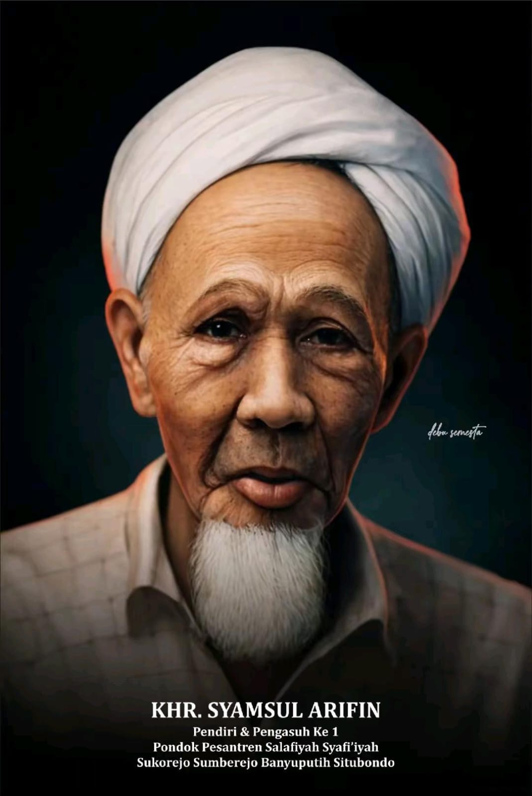
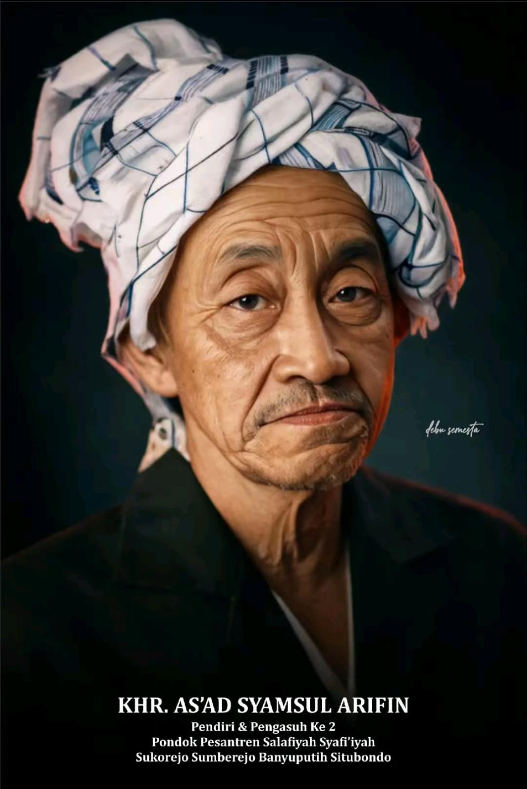
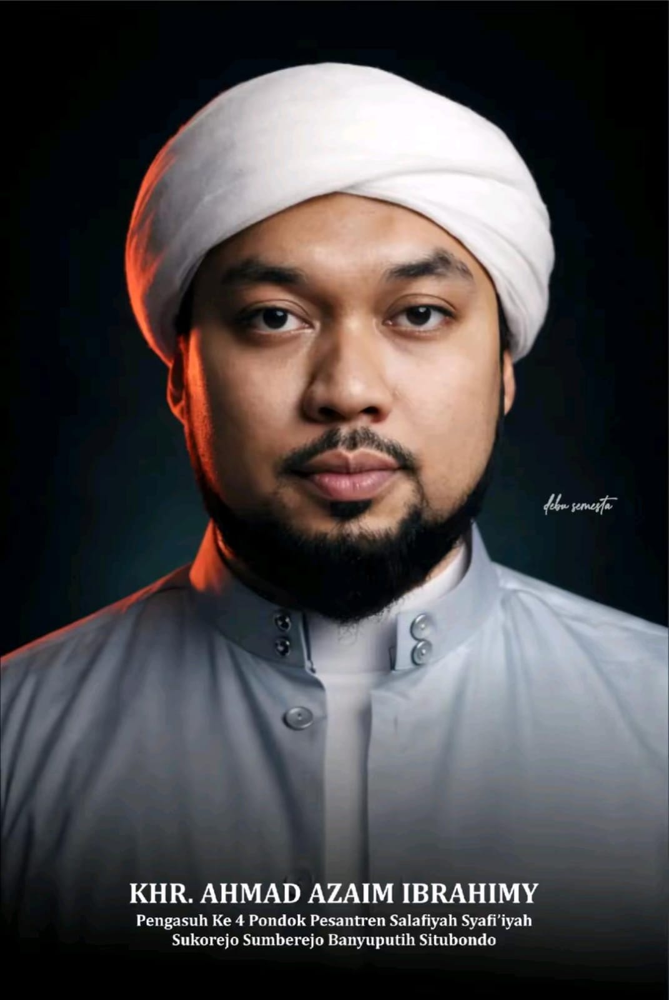

Pondok Pesantren Salafiyah Syafi’iyah Sukorejo berdiri dan berkembang di atas sanad keilmuan, adab, dan pengabdian. Pesantren menjadi sumber nilai, pengasuh menjadi penjaga arah dan kesinambungan, sementara IKSASS hadir sebagai wadah khidmah alumni yang tetap terikat pada pesantren. Ketiganya membentuk satu kesatuan yang tidak terpisahkan dalam menjaga tradisi, perjuangan, dan tanggung jawab kebangsaan.
Pesantren
Pesantren Salafiyah Syafi’iyah Sukorejo merupakan pusat pendidikan, pengasuhan, dan pembinaan keilmuan yang melahirkan generasi santri berilmu, beradab, dan berkhidmah.
Berdiri dengan fondasi tradisi keilmuan Ahlussunnah wal Jama’ah, pesantren ini menjaga kesinambungan sanad keilmuan sekaligus membentuk karakter santri yang bertanggung jawab di tengah masyarakat.
Sebagai lembaga pendidikan, Pesantren Sukorejo tidak hanya menanamkan ilmu, tetapi juga membangun kesadaran akan pentingnya adab, loyalitas terhadap nilai, dan pengabdian kepada umat serta bangsa. Tradisi pesantren terus dijaga dengan penuh kehati-hatian, sambil merespons perkembangan zaman secara bijaksana.
Pengasuh
Pengasuh Pesantren Salafiyah Syafi’iyah merupakan figur sentral dalam menjaga arah, nilai, dan keberlanjutan pesantren. Dalam perannya, pengasuh membimbing santri dalam aspek keilmuan dan adab, sekaligus menjadi rujukan moral dan spiritual bagi santri serta alumni dalam menjalani kehidupan bermasyarakat.
Arahan dan dawuh pengasuh menjadi pedoman yang dijunjung tinggi. Di dalamnya terdapat kesinambungan nilai yang diwariskan dari generasi ke generasi, memastikan pesantren tetap berdiri kokoh di atas prinsip dan tanggung jawabnya.
Estafet Kepengasuhan

KHR. Syamsul Arifin
1914–1951
Pendiri dan Pengasuh I Pondok Pesantren Salafiyah Syafi’iyah Sukorejo
KHR. Syamsul Arifin (Raden Ibrahim) adalah pendiri Pesantren Sukorejo, lahir di Pamekasan. Sebagai murid Syaikhona Kholil, beliau dikenal teguh dalam prinsip, ikhlas dalam pengabdian, dan penuh kasih dalam dakwah. Dengan istiqamah, beliau membangun Sukorejo hingga menjadi pusat ilmu dan perjuangan umat.

KHR. As’ad Syamsul Arifin
1951–1990
Pengasuh II Pondok Pesantren Salafiyah Syafi’iyah Sukorejo
KHR. As’ad Syamsul Arifin, putra KHR. Syamsul Arifin, lahir di Makkah dan menimba ilmu kepada para ulama serta di berbagai pesantren. Beliau dikenal sebagai ulama pejuang, pemimpin Sabilillah, pengasuh Pesantren Sukorejo, penjaga akidah Ahlussunnah wal Jama’ah, serta tokoh penting dalam penerimaan Pancasila.
KHR. Ach. Fawaid As’ad
1990–2012
Pengasuh III Pondok Pesantren Salafiyah Syafi’iyah Sukorejo
KHR. Ach. Fawaid As’ad adalah Pengasuh ke-III Pesantren Sukorejo sekaligus pendiri IKSASS. Dikenal kharismatik dan aktif dalam dakwah serta pengabdian kebangsaan, beliau mewarisi semangat perjuangan para masyayikh dalam memperkuat pesantren, membina santri, dan menggerakkan alumni.

KHR. Ach. Azaim Ibrahimy
2012–Sekarang
Pengasuh IV Pondok Pesantren Salafiyah Syafi’iyah Sukorejo
KHR. Ach. Azaim Ibrahimy adalah Pengasuh ke-IV Pesantren Sukorejo dan Ketua Umum Majelis Syûri IKSASS. Sosok ulama muda yang kharismatik, beliau aktif membina santri dan wali santri, menjaga nilai pesantren, serta menguatkan peran pendidikan dan nasionalisme di tengah dinamika zaman.
IKSASS
Ikatan Santri Alumni Salafiyah Syafi’iyah (IKSASS) lahir sebagai wadah bagi alumni dalam menjaga ikatan spiritual, moral, dan organisatoris dengan pesantren.
IKSASS bukan sekadar organisasi alumni, melainkan ruang khidmah yang berlandaskan loyalitas kepada pesantren dan arahan pengasuh. Dalam setiap gerak dan langkahnya, IKSASS berkomitmen menjaga marwah pesantren, memperkuat ukhuwah alumni, serta berkontribusi bagi umat dan bangsa.
Hubungan Pengasuh, Pesantren, dan IKSASS
IKSASS merupakan rumah besar santri dan alumni yang tumbuh dan berkembang dalam naungan Pondok Pesantren Salafiyah Syafi’iyah Sukorejo. Kehadirannya bukan sekadar sebagai organisasi alumni, melainkan sebagai ruang khidmah yang menjaga kesinambungan nilai, adab, dan perjuangan pesantren.
Seluruh gerak langkah IKSASS senantiasa diarahkan untuk:
menjaga adab dan marwah pesantren,
mendukung perjuangan dan visi pesantren,
serta memastikan kesinambungan peran santri dan alumni dalam berbagai bidang kehidupan.
“Alumni bukan hanya ujung tombak, tetapi juga benteng bagi siapa pun yang ingin merongrong pesantren.”
— KHR. Ach. Fawaid As’ad
Hubungan ini terjalin dalam bingkai ketaatan, kebersamaan, dan tanggung jawab bersama antara pesantren, pengasuh, serta santri dan alumni.